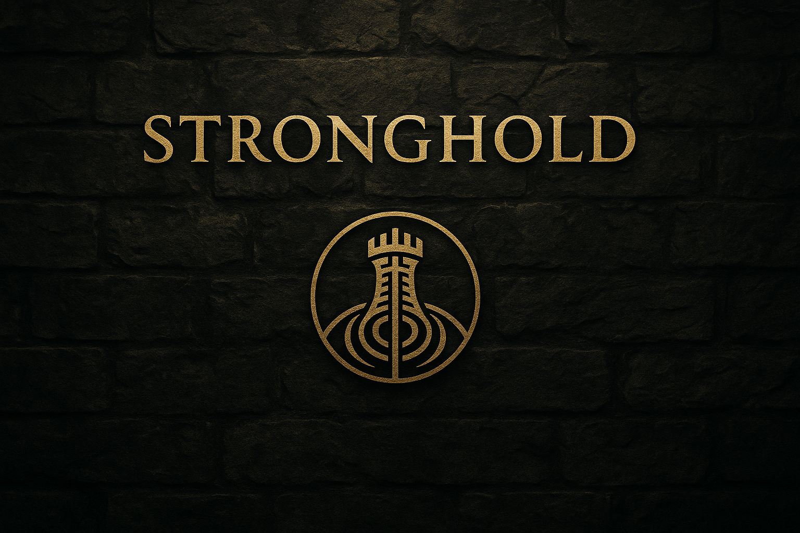

Gate closed.
— Within the Command Spine
Tap
to begin
or press Enter
The Stronghold Codex — Gate Closed
Stronghold stands; its soul waits outside linear time.
Entry 0 — The Root Challenge
— Within the Command Spine
Stronghold listens
Only to those who hear.